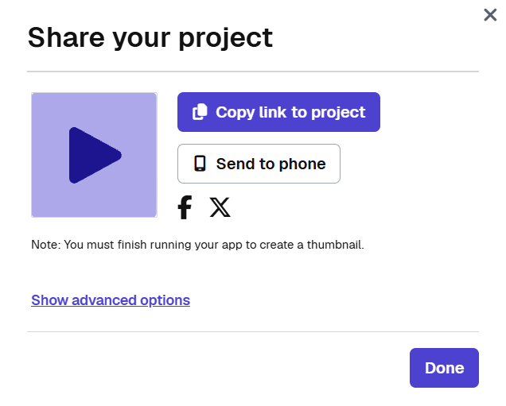

Today classmates will test your app. You will use what you see to improve it, record a video of it running, and submit it.
Step 8Test each other’s apps in small groups and record the feedback.
Step 9Pick improvements based on what you saw.
Step 10Complete your app.
Step 11Record a video of your app running.
ThenCheck the rubric and submit.
Sit with your group so that you can see each other’s screens. Bring your planning guide; you will write feedback in it.
Open Lesson 12, Level 7 on Code.org.
Level 7 has your app from Day 2. Run it once yourself to make sure it works, then get ready to hand it to a tester.
Each app is tested by at least two other students. The tester uses the app with no help from its creator.
The creator watches and writes. Record what the testers say and what you notice while they use your app, in Step 8 of your planning guide.
For example, you might notice that a tester cannot tell which button makes the app run. That is worth writing down, even if they never say it out loud.
Try to reach every answer the app can give. If you think there should be another answer, try inputs that might get there.
Try the edges too: a blank name, the highest and lowest numbers, and every option in each dropdown.
Say what you expected to happen whenever the app surprises you. “I thought this button would …” is more useful to the creator than “it’s good.”
Step 9Pick improvements. Read your testing notes and choose the changes that would help users most. Write them in your planning guide.
Step 10Complete your app in Level 7. Make one change at a time and test after each one.
Step 11Record a video of you using your app.
Use the Snipping Tool to record your app running. The video should show three things: the user giving input, the app’s functionality as it makes the decision, and the output.
Show at least two different inputs so the video reaches two or more different answers. Keep it short; under a minute is plenty.
The video shows the app, not the code, so you do not need to scroll through your program.
1On Level 8, click Share, then Copy link to project. Paste that link into your browser to open your app on your laptop.
2Press Win + Shift + R. You can also open the Snipping Tool, switch to the video camera, and click New.
3Drag a box around just your app, then click Start. Recording begins after a 3-second countdown.
4Use your app, then click the red Stop button.
5Click Save or press Ctrl + S to save the video as an MP4 file. Newer versions also save a copy in Videos > Screen Recordings.

The planning guide is fully completed.
The video shows the app running, with input, functionality, and output.
The app is easy to navigate, it is clear how to use it, and all text is readable.
Nothing shows in the console when the app runs.
A number and a string are each stored in a variable and used to decide.
A function updates the screen and is called at least two times.
The function’s comment clearly explains its purpose and functionality.
A conditional inside the function uses the variables to decide, correctly uses a logical operator, and can show at least three different answers.
When your app meets the rubric, click Submit on Code.org. You will turn in three things:
Check the rubric on Level 8 one more time before you submit.
What is one change you made because of a tester’s feedback? What did they do or say, and how did the change improve your app?